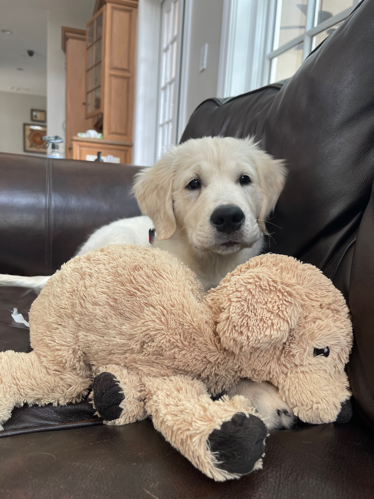

<!DOCTYPE html>
<html>
<head>
	<link rel="stylesheet" type="text/css" href="css/style-6.css" />
	<title>Blog</title>
</head>
</html>
<body>
<div id=content>
	<div id="blog-container">
		<div class= "info">
			<div id="header">
			<h1>Hooray, you’ve found my blog! 
			</h1>
			</div>

			<div id=text-blocks>
				<div class="block" id="block-1">
					<p> I’m using this site as a way to better understand and build upon my ideas, in addition to finding connections to others' work that interests me. It’s still pretty new, and I figure that this site's structure as well as its content will grow and transform as I continue to contribute to it. I've taken inspiration from other non-linear sites like <a href="https://notes.andymatuschak.org/About_these_notes?stackedNotes=zUw5PuD8op9oq8kHvni6sug6eRTNtR9Wqma"><u>Andy Matuschak's</u></a>. Pick a topic to get started:</p> <br>  

				</div>	

				<div class="block">

					<u1 type="disc">
						<li> <a href="../blog_entries/blog_20210624.html"><u>learning</u></a> </li>
						<li> <a href="../blog_entries/blog_20210620.html"><u>knowing</u></a> </li>
						<li> <a href="../blog_entries/blog_20210325.html"><u>thinking</u></a> </li>
						<li> <a href="../blog_entries/blog_20210623.html"><u>being</u></a> </li>
						<li> <a href="../blog_entries/past_writing.html"><u>past writing</u></a> </li>
					</u1>

				</div>

			</div>	

			<div class="content-img-wrapper">
				
				<p class="caption"> <a href="appa.html"><u>Appa</u></a> and his mini-me</p>

			</div>

			<div class="home">

				<p> <a href="index.html"><u>Back</u></a> <br> </p>

			</div>
	</div>
</div>
</body>
